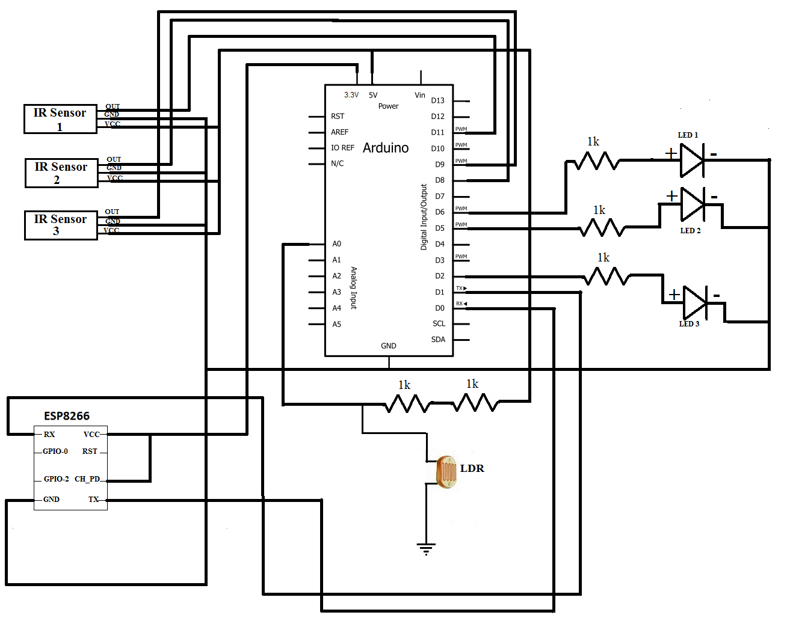

Iluminação pública
1.1 Introdução
Nesse experimento, vamos criar postes de rua que ligam e desligam automaticamente, pois atualmente ainda existe um sistema manual de ligar e desligar os postes, fazendo com que o gasto de energia seja maior. Para conseguir fazer esse experimento vamos utilizar:
• Arduino UNO Wifi Rev.2
• LED
• LDR, 1 Mohm
• I - Impulso
• Sensor de proximidade Digilent IR
• Espressif ESP8266 ESP-12E
• Resistor 1k Ohm
• Breadboard, 170 Pin
Montagem:

Circuito impresso:
Código:
int smooth;
int LDR;
int threshold = 40;//sun's intensity
int brightness = 0;
int ledState = 0;
int sensor1 = 11;
int sensor2 = 8;
int sensor3 = 9;
int led1=5;
int led = 6;
int led2=2;
int carPresent = 0;
int carPresent1 = 0;
float beta = 0.65;
void setup() {
// put your setup code here, to run once:
Serial.begin(115200);
pinMode(sensor1, INPUT);
pinMode(sensor2, INPUT);
pinMode(sensor3, INPUT);
pinMode(led,OUTPUT);
pinMode(led1,OUTPUT);
pinMode(led2,OUTPUT);
}
void loop() {
smooth = smooth - (beta * (smooth - analogRead(A0)));
delay(1);
LDR = round(((float)smooth / 1023) * 100);
if (LDR <= 40)
brightness=0;
else
{
brightness = map(LDR, 40, 100, 0, 255);
}
checkSensors();
if (carPresent == 1)
{
ledState = 1;
digitalWrite(led,HIGH);
digitalWrite(led1,HIGH);
analogWrite(led,brightness);
analogWrite(led1,brightness);
}
else if (carPresent == 0)
{
ledState = 0;
digitalWrite(led,HIGH);
//digitalWrite(led1,HIGH);
analogWrite(led,ledState);
//analogWrite(led1,ledState);
if(carPresent1 == 1)
{
ledState = 1;
if(ledState == 1)
{
analogWrite(led1,brightness);
analogWrite(led2,brightness);
}
}
else if (carPresent1 == 0)
{
ledState = 0;
digitalWrite(led1,HIGH);
digitalWrite(led2,HIGH);
analogWrite(led1,ledState);
analogWrite(led2,ledState);
}
}
String data = (String)ledState+","+(String)brightness+";";
Serial.print(data);
// Serial.print(digitalRead(sensor1)); ,
// Serial.print("\t");
// Serial.print(digitalRead(sensor2));
// Serial.print("\t");
// Serial.print(ledState);
// Serial.print("\t");
// Serial.println(brightness);
delay(100);
}
void checkSensors()
{
if (digitalRead(sensor1) == 0)//Car captured in 1st sensor
{
if (digitalRead(sensor2) == 1)//Car still didnt reach the 2nd sensor
carPresent = 1;
}
else if (digitalRead(sensor2) == 0)//Car reached the 2nd sensor
{ //No cars detected behind the first car
if (digitalRead(sensor1) == 1)
{
carPresent = 0;
carPresent1 = 1;
}
else if (digitalRead(sensor1) == 0 )
{
analogWrite(led,brightness);
analogWrite(led1,brightness);
analogWrite(led2,brightness);
digitalWrite(led,HIGH);
digitalWrite(led1,HIGH);
digitalWrite(led2,HIGH);
}
}
else if(digitalRead(sensor3) == 0)//car reached the 3rd sensor
{
//No cars detected behind the first car br
if (digitalRead(sensor2) == 1)
{
carPresent = 0;
carPresent1 = 0;
}
else if (digitalRead(sensor2) == 0 )
]
{
carPresent = 0;
carPresent1 = 1;
}
}
}